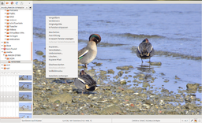
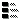
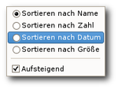

Geeqie
Dieser Artikel wurde für die folgenden Ubuntu-Versionen getestet:
Ubuntu 14.04 Trusty Tahr
Zum Verständnis dieses Artikels sind folgende Seiten hilfreich:
Geeqie  ist ein sehr schneller, auf GTK-basierender Bildbetrachter. Dabei handelt es sich um eine Abspaltung (Fork) des Programms GQview. Die Entwicklung fokussiert sich auf Bildverwaltung: Anzeige auch von RAW-Bildern, Editieren von Metadaten und die Zusammenarbeit mit externen Programmen wie beispielsweise UFraw, ImageMagick und GIMP.
ist ein sehr schneller, auf GTK-basierender Bildbetrachter. Dabei handelt es sich um eine Abspaltung (Fork) des Programms GQview. Die Entwicklung fokussiert sich auf Bildverwaltung: Anzeige auch von RAW-Bildern, Editieren von Metadaten und die Zusammenarbeit mit externen Programmen wie beispielsweise UFraw, ImageMagick und GIMP.
Ein praktischer Vorteil im Vergleich mit Programmen wie Shotwell ist, dass die Bilder nicht erst in eine interne Datenbank importiert werden müssen. Es werden also vorhandene Ordnerstrukturen – wie bei gThumb – problemlos übernommen.
Folgende Optionen werden unterstützt:
|  |
| Geeqie mit Bearbeitungsmenü nach Rechtsklick |
Anzeige von Raster- und Vektorbildern in allen gängigen Formaten einschließlich RAW-Formaten
Anzeige und Bearbeiten von Metadaten:
Unterstützung für ICC-Farbprofilen, Farbmanagement mit definierbaren Farbräumen
Anzeige von Farbhistogrammen und den Farbwerten individueller Pixel
Bildwiedergabe wahlweise als Einzelbild normal (mit Vorschaubildern), bildschirmfüllend oder als Diashow
Bilder vergleichen über eine gleichzeitige Anzeige von 2 oder 4 Bildern
Suchfunktion nach diversen Kriterien, u.a. nach ähnlichen Bildern oder Duplikaten
Grundlegende Bearbeitungsfunktionen wie verlustfreies Drehen oder Spiegeln
Einbindung externer Editoren wie z.B. RawTherapee, GIMP oder UFRaw
Ab der Version 1.1 wird eine Stereobilddarstellung mit side-by-side (JPS) und MPO 3D Photoformat unterstützt
Installation¶
 Folgendes Paket muss installiert werden [1]:
Folgendes Paket muss installiert werden [1]:
geeqie (universe)
 mit apturl
mit apturl
Paketliste zum Kopieren:
sudo apt-get install geeqie
sudo aptitude install geeqie
Bedienung¶
Nach der Installation kann das Programm bei Ubuntu-Varianten mit einem Anwendungsmenü über "Grafik -> Geeqie" aufgerufen werden.
Bei Programmstart wird das Homeverzeichnis geöffnet und die sich darin befindlichen Bilder angezeigt. Unter dem jeweiligen Bild sind in der Statuszeile Informationen zur Bildgröße, Dateigröße und zum Ansichtsverhältnis zu sehen. Möchte man Exif-Informationen oder versteckte Dateien angezeigt bekommen, muss man diese Möglichkeiten mittels Tastenkürzel vorübergehend oder in den Einstellungen dauerhaft aktivieren.
Navigationsleiste¶
Die Navigation innerhalb des Programms ist intuitiv zu erfassen:
| Navigation | |
| Element | Bedeutung |
|  | Vorschaubilder (de)aktivieren |
| Das eingestellte Hauptverzeichnis wird aufgerufen - Standard ist das Homeverzeichnis | |
| Ansicht aktualisieren | |
 | Ansicht vergrößern |
 | Ansicht verkleinern |
| Bild an Fenstergröße anpassen | |
| Originalgröße | |
 | Einstellungen |
| Werkzeuge schwebend | |
 | Geschlossener Ordner |
 | Ordner geöffnet |
 | Eine Ebene höher wechseln |
Vorschaubilder¶
Geeqie kann in der Dateiliste unten links im Programmfenster Vorschaubilder (Thumbnails) anzeigen. Diese Vorschaubilder werden in den Ordnern ~/.thumbnails oder ~/.gqview/thumbnails abgelegt.
Diashow¶
Um die Diashow zu starten, unter "Ansicht -> Diashow umschalten" auswählen oder S drücken. Die Schnelligkeit des Bildwechsels richtet sich danach, was in den Einstellungen angegeben wurde.
Metadaten¶
Das Programm enthält einen umfangreichen Metadaten-Editor. Besonders praktisch ist der automatische Abgleich zwischen XMP- und IPTC-Daten. XMP-Felder werden automatisch nach dem Standard IPTC4XMP 1.0 in IPTC-Felder umgesetzt (muss vorher in den Einstellungen aktiviert werden). Geeqie bietet damit derzeit eine der bequemsten Möglichkeiten, um XMP-Metadaten unter Linux schreiben zu können.
Zur Anzeige des Editors "Ansicht -> Informationsseitenleiste" oder Strg + K verwenden. Ganz rechts unten in der Ecke befindet sich eine Schaltfläche , um geänderte Metadaten sofort zu speichern.
Bewertungen¶
Das Programm bietet die Möglichkeit, Bilder in 6 Stufen zu bewerten, auch Kombinationen mehrerer Bewertungen sind möglich. Ferner können nur Bilder mit bestimmter Bewertung angezeigt werden. Diese Bewertungsmöglichkeiten sind hilfreich beim Aussortieren größerer Bildermengen. Versteckt sind diese Bewertungen im Menü unter "Auswahl -> Markierungen anzeigen" oder mit M .
Bilder vergleichen¶
Um beispielsweise zwei Bilder (optisch) miteinander zu vergleichen, kann man die Funktion "Ansicht -> Aufteilen" nutzen. Zuerst markiert man in der Dateiauswahl beide Bilder mit Strg und schaltet anschließend die Ansicht auf "übereinander" um. Auf diese Weise lassen sich max. vier Bilder gemeinsam darstellen.
Um Bilder gemeinsam zu zoomen, verwendet man die Tastenkombination ⇧ + + bzw. ⇧ + - .
Sammlung¶
Eine Sammlung dient beispielsweise dazu, Bilder thematisch über eine vorhandene Ordnerstruktur hinaus zusammenzufassen. Dazu öffnet man über "Datei -> Neue Sammlung" oder
C ein neues Fenster und fügt über Drag'n'Drop Bilder mit einem Dateimanager hinzu. Die rechte Maustaste  im Sammlungsfenster zeigt weitere Möglichkeiten. Zum Schluss darf man allerdings nicht vergessen, die Sammlung abzuspeichern. Geeqie verwendet dazu .gqv-Dateien, die im Ordner ~/.local/share/geeqie/collections/ gespeichert werden. Da es sich um reine Textdateien handelt, können diese auch mit einem Editor eingesehen oder nachbearbeitet werden.
im Sammlungsfenster zeigt weitere Möglichkeiten. Zum Schluss darf man allerdings nicht vergessen, die Sammlung abzuspeichern. Geeqie verwendet dazu .gqv-Dateien, die im Ordner ~/.local/share/geeqie/collections/ gespeichert werden. Da es sich um reine Textdateien handelt, können diese auch mit einem Editor eingesehen oder nachbearbeitet werden.
Bildbearbeitung¶
Sofern man die Bilder in dem Ordner bearbeiten möchte, können einige Funktionen direkt aus GQview heraus vorgenommen werden. Die Drehfunktion ist leider nur für JPG-Dateien verfügbar. Man findet sie entweder im Rechtsklick-Menü oder in der Werkzeugleiste unter "Bearbeiten -> Ausrichtung".
Sehr nützlich ist die Möglichkeit, GIMP oder ein anderes Programm zur Bearbeitung starten zu können. Hier genügt es, einen Rechtsklick auf das gewünschte Bild auszuführen und dann die Option zu wählen: "Bearbeiten -> GIMP Bildbearbeitung". Tastenkürzel erweisen sich hier ebenfalls als nützliches Werkzeug.
Sortiermanager¶
Diese Komponente wird über "Ansicht -> Sortiermanager" (de)aktiviert - alternativ per Tastenkürzel ⇧ + S . Mit diesem Programmteil ist es möglich, Bilder schnell zu sortieren und über das eingeblendete Menü - je nach Auswahl - in den ausgewählten Ordner zu kopieren, verschieben bzw. dort einen symbolischen Link anzulegen.
 Möchte man die Dateinamen nach einem bestimmten Kriterium sortiert haben, wählt man in der unteren Leiste den Punkt "Sortieren nach Name" an und kann nun im neuen Menü zwischen den Optionen - jeweils in auf-/absteigender Reihenfolge - wählen:
Name,
Zahl,
Datum und
Größe
Einstellungen¶
 Es können eine Vielzahl von Einstellungen im Programm vorgenommen werden. Das Einstellungsmenü ist über "Bearbeiten -> Einstellungen-> Einstellungen" zu erreichen. Hinter den jeweiligen Reitern gibt es nützliche Zusatzoptionen:
Es können eine Vielzahl von Einstellungen im Programm vorgenommen werden. Das Einstellungsmenü ist über "Bearbeiten -> Einstellungen-> Einstellungen" zu erreichen. Hinter den jeweiligen Reitern gibt es nützliche Zusatzoptionen:
| Einstellungen | |
| Reiter | Konfigurationsmöglichkeit |
| Allgemein | Startverzeichnis, Vorschaubilder und Diashoweinstellungen |
| Bild | Zoom und sonstige Bildeinstellungen |
| Fenster | Status, Layout und Größe |
| Tastatur | Befehlsübersicht und zugeordnete Tasten. Siehe auch Tastenkürzel. |
| Dateien | u.a. Umgang mit RAW-Dateien |
| Schlüsselworte und Kommentare | Umgang mit Metadaten |
| Farbverwaltung | siehe Farbmanagement |
| Verhalten | weitere Einstellungen u.a. zum Papierkorb |
Geeqie speichert seine Einstellungen im Ordner ~/.config/geeqie/. Externe Programme werden über einen eigenen Menüpunkt konfiguriert (siehe nächster Abschnitt).
Externe Editoren¶
Um weitere externe Programme zur Bildbearbeitung einzubinden, erstellt man sich einen eigenen Programmstarter mit der Endung .desktop im Ordner ~/.local/share/applications/. Entscheidend sind hier die Einträge "Categories=..." und "MimeTyp=...". Beispiel:
Categories=X-Geeqie;Graphics;2DGraphics;GTK; MimeType=image/cr2;image/crw;image/nef;image/x-dcraw;image/x-ciff;image/x-mrw;image/x-x3f;image/x-orf;image/x-nef;image/x-cr2;image/x-raf;
Soll das einzubindende Programm nicht (nochmal) im Anwendungsmenü auftauchen bzw. nur in Geeqie sichtbar sein, reicht der Eintrag "Categories=X-Geeqie;" aus. Über "MimeType=..." kann festgelegt werden, bei welchen Dateitypen Geeqie die Bearbeitung mit dem externen Editor anbieten soll. Nach einem Neustart von Geeqie sollte das entsprechende Programm im Menü unter "Bearbeiten -> Externe Editoren" aufgelistet sein.
Papierkorb¶
Geeqie verwendet im Gegensatz zu anderen Programmen einen eigenen, internen Papierkorb (der in der Voreinstellung deaktiviert ist!). Wenn Dateien mit Geeqie gelöscht werden, so ist dieser Vorgang dann nicht mehr rückgängig zu machen. Um den internen Papierkorb zu aktivieren, ruft man über das Menü "Bearbeiten -> Einstellungen -> Einstellungen -> Verhalten" die Einstellungen zum Löschen auf und setzt die Option "Papierkorb verwenden". Gegebenenfalls erhöht man auch noch die Größe des internen Papierkorbs (Voreinstellung: 128 MiB). Möchten man in den allgemeinen Papierkorb verschieben, muss der Pfad auf ~.local/share/Trash/files gesetzt werden.
Farbmanagement¶
Zu dieser Problematik siehe Monitor Kalibrieren und xcalib. ICC-Farbprofile können mittels einer Integration von Little CMS ausgewertet werden. Ab Ubuntu 10.04 kann auch der Gnome Color Manager für die Verwaltung von Farbprofilen eingesetzt werden.
Tastenkürzel¶
Neben den voreingestellten Tastenkürzeln lassen sich auch eigene definieren (siehe Einstellungen). Eine Auswahl:
| Tastenkürzel | |
| Taste(n) | Beschreibung |
| + | Ansicht vergrößern |
| - | Ansicht verkleinern |
| Z | Originalgröße |
| X | In Fenster einpassen |
| F | Vollbild |
| Strg + E | Exif-Daten einblenden |
| S | Diashow |
| P | Diashow pausieren |
| T | Vorschaubilder ein/aus |
| M | Bewertungen ein/aus |
| Strg + L | Listenansicht |
| Strg + I | Iconansicht |
| Strg + K | Informationsseitenleiste anzeigen/verbergen |
Problembehebung¶
Links¶
Geeqie image viewer gets stereoscopic images support
- Blogbeitrag, 08/2012
Bilder verwalten
 Programmübersicht
ProgrammübersichtGrafik
Übersichtsartikel
- Erstellt mit Inyoka
-
 2004 – 2017 ubuntuusers.de • Einige Rechte vorbehalten
2004 – 2017 ubuntuusers.de • Einige Rechte vorbehalten
Lizenz • Kontakt • Datenschutz • Impressum • Serverstatus -
Serverhousing gespendet von